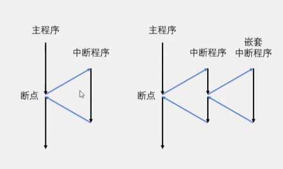

# 中断系统
- 中断：在主程序运行过程中，出现了特定的中断触发条件（中断源），使得 cpu 暂停当前正在运行的程序，转而去处理中断程序，处理完成后又返回原来被暂停的位置继续运行
- 中断优先级：当有多个中断源同时申请中断时，cpu 会根据中断源的轻重缓急进行判决，优先相应更加紧急的中断源
- 中断嵌套：当一个中断程序正在运行时，又有新的更高优先级的中断源申请中断，cpu 再次暂停当前中断程序，转而去处理新的中断程序，处理完成后依次返回
# 中断执行流程

# stm32 中断
68 个可屏蔽中断同道，包含 EXTI、TIM、ADC、USART、SPI、I2C、RTC 等多个外设
使用 NVIC 统一管理中断，每个中断通道都拥有 16 个可编程的优先等级，可对优先级进行分组，进一步设置抢占优先级和响应优先级
# NVIC
# NVIC 基本结构
NVIC：嵌套中断向量控制器，在 stm32 中，它是用来统一分配中断优先级和管理中断的。NVIC 是一个内核外设。
NVIC 只有一个输出口，NVIC 根据每个中断的优先级分配中断的先后顺序之后通过右边的一个输出口告诉 cpu 该执行哪个中断
打个比喻，NVIC 相当于医院里的叫号系统，cpu 相当于医生，NVIC 将中断进行排序并依次单个进入 cpu 执行。
# NVIC 优先级分组
- NVIC 的中断优先级由优先级寄存器的四位（0~15）决定，这 4 位可以进行切分，分为高 n 位的抢占优先级和低 4-n 位的响应优先级
- 抢占优先级高的可以中断嵌套，响应优先级高的可以优先排队，抢占优先级和响应优先级均相同的按中断号排队
| 分组方式 | 抢占优先级 | 响应优先级 |
|---|---|---|
| 分组 0 | 0 位，取值为 0 | 4 位，取值为 0~15 |
| 分组 1 | 1 位，取值为 0~1 | 3 位，取值为 0~7 |
| 分组 2 | 2 位，取值为 0~3 | 2 位，取值为 0~3 |
| 分组 3 | 3 位，取值为 0~7 | 1 位，取值为 0~1 |
| 分组 4 | 4 位，取值为 0~15 | 0 位，取值为 0 |
# EXTI
# EXTI 简介
- EXTI（Extern Interrupt）外部中断
- EXTI 可以监测指定 GPIO 口的电平信号，当其指定的 GPIO 口产生电平变化时，EXTI 将立即向 NVIC 发出中断申请，经过 NVIC 裁决后即可中断 CPU 主程序，使 CPU 执行 EXTI 对应的中断程序
- 支持的触发方式：
- 上升沿：电平从低电平变到高电平的瞬间触发中断
- 下降沿：电平从高电平变到低电平的瞬间触发中断
- 双边沿：上升沿和下降沿都可以触发中断
- 软件触发：引脚无变化，程序里执行一句代码，就能触发中断
支持的 GPIO 口：所有 GPIO 口，但相同的 Pin 不能同时触发中断
同道数：16 个 GPIO_Pin，外加 PVD 输出，RTC 闹钟，USB 唤醒，以太网唤醒
触发响应方式：中断响应 / 事件响应
总结：中断响应是正常的流程，引脚电平变化触发中断，事件响应不会触发中断，而是触发别的外设操作，属于外设之间的联合工作